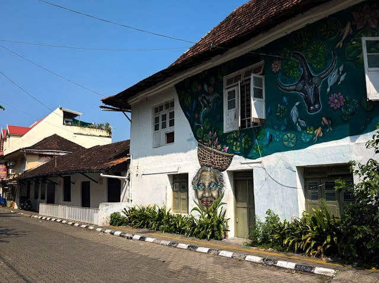
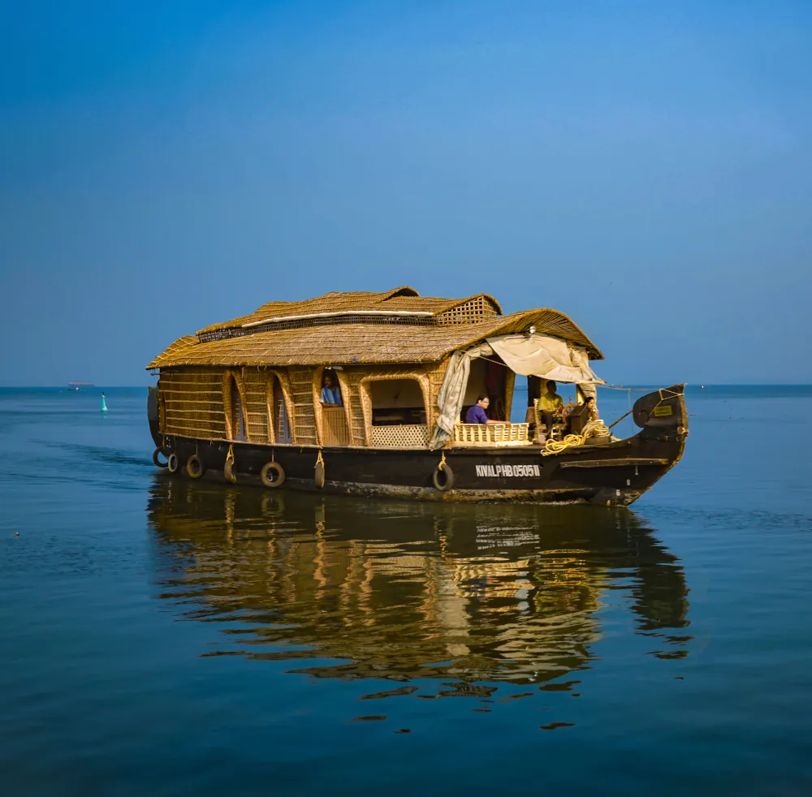

Join us in Kochi, Kerala for the 55th Annual Conference of the Indian Society of Nephrology
The 55th Annual Conference of the Indian Society of Nephrology (ISNCON 2026) represents a pivotal moment in the advancement of nephrology care in India and across the globe.
This prestigious event will bring together over 2000 delegates from 50+ countries, including world-renowned nephrologists, researchers, clinicians, and healthcare professionals to discuss the latest advancements in kidney care, treatment modalities, and cutting-edge research.
Through a combination of scientific sessions, workshops, poster presentations, and networking opportunities, ISNCON 2026 aims to foster collaboration and knowledge exchange that will shape the future of nephrology.

Share latest research and clinical advancements in nephrology with global experts
Connect with peers, mentors, and industry leaders from around the world
Enhance clinical skills through hands-on workshops and interactive sessions
The Indian Society of Nephrology (ISN) is the premier professional organization dedicated to the advancement of nephrology in India. Founded in 1970, the society has been instrumental in promoting research, education, and clinical practice in kidney care.
With over 5000 active members including nephrologists, transplant physicians, researchers, and healthcare professionals, ISN continues to lead initiatives in kidney disease prevention, management, and policy formulation.
